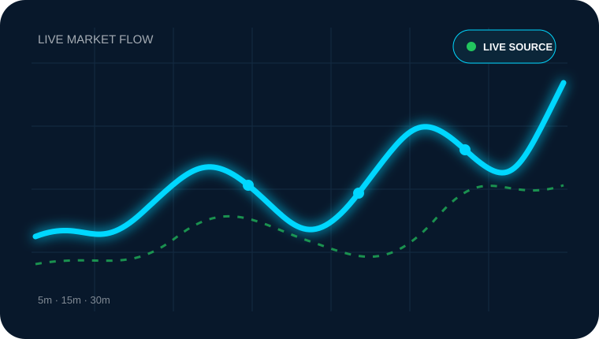

LIVE MULTI-STRATEGY SIGNAL ENGINE
Study the market.
See the signal.
Explore a library of 1,000 strategies against live market data across multiple timeframes. Built as an educational market-intelligence workspace, not an automatic trading system.
◉ Live source⌁ Multi-timeframe◎ Educational

STRATEGY STACK
0
strategies selected
Next analysis00:60
Strategy library1,000 strategies
1m5m15m30m1h4h
01ExploreBrowse and select strategies
02CompareWatch six timeframe confirmations
03LearnUse signals as study material